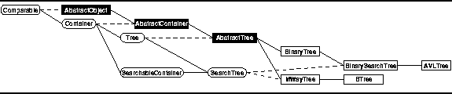

Data Structures and Algorithms
with Object-Oriented Design Patterns in Java
Data Structures and Algorithms
with Object-Oriented Design Patterns in Java
Since search trees are designed to support efficient searching,
it is only appropriate that they implement
the SearchableContainer interface.
Recall from Section  that the searchable container
interface includes the methods find, isMember,
insert, and withdraw.
that the searchable container
interface includes the methods find, isMember,
insert, and withdraw.

Figure: Object class hierarchy
Program defines the SearchTree interface.
The SearchTree interface extends the Tree interface
defined in Program
and the SearchableContainer interface
defined in Program .
Program: SearchTree interface.
In addition, two more methods are defined--findMin and findMax. The findMin method returns the object contained in the search tree having the smallest key. Similarly, the findMax method returns the contained object having the largest key.
 Copyright © 1998 by Bruno R. Preiss, P.Eng. All rights reserved.
Copyright © 1998 by Bruno R. Preiss, P.Eng. All rights reserved.